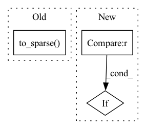

Pattern ID :15052
Before Change
strided_matrix = convolution_matrix.to_dense()[strided_rows, :]
return strided_matrix.to_sparse()
After Change
for entry in non_zero_row_entries:
if entry in strided_rows:
mask.append(True)
if previous_entry != entry :
counter += 1
strided_row_indices.append(counter)
else:In pattern: SUPERPATTERN
Frequency: 3
Non-data size: 3
Instances Fragment ID: 50492258
Project Name: v0lta/pytorch-wavelet-toolbox
Commit Name: f659f1a0eacbd03f1438d0c70729ce7e95eb9ea0
Time: 2021-09-13
Author: moritz.wolter@scai.fraunhofer.de
File Name: src/ptwt/matmul_transform_2d.py
M Class Name: AnonimousClass
N Class Name: AnonimousClass
M Method Name: construct_strided_conv2d_matrix(5)
N Method Name: construct_strided_conv2d_matrix(5)
M Parent Class:
N Parent Class:
M File Name: src/ptwt/matmul_transform_2d.py
N File Name: src/ptwt/matmul_transform_2d.py
M Start Line: 80
M End Line: 113
N Start Line: 88
N End Line: 127
Before Change
s_full = construct_s(wavelet, length, wrap=False)
s_orth = clip_and_orthogonalize(
s_full.transpose(1, 0), wavelet, length)
return s_orth.transpose(1, 0).to_sparse()
def matrix_waverec(coefficients, wavelet, level: int = None):
Experimental matrix based inverse fast wavelet transform.After Change
if boundary == "circular":
return construct_s(wavelet, length, wrap=True, dtype=dtype)
elif boundary == "gramschmidt" :
s_full = construct_s(wavelet, length, wrap=False, dtype=dtype)
s_orth = clip_and_orthogonalize(
s_full.transpose(1, 0), wavelet) Fragment ID: 50492256
Project Name: v0lta/pytorch-wavelet-toolbox
Commit Name: d668ef438418877afc8765c85269c8be689510ec
Time: 2021-09-20
Author: moritz.wolter@scai.fraunhofer.de
File Name: src/ptwt/matmul_transform.py
M Class Name: AnonimousClass
N Class Name: AnonimousClass
M Method Name: construct_boundary_s(4)
N Method Name: construct_boundary_s(2)
M Parent Class:
N Parent Class:
M File Name: src/ptwt/matmul_transform.py
N File Name: src/ptwt/matmul_transform.py
M Start Line: 213
M End Line: 226
N Start Line: 227
N End Line: 251
Before Change
a_full = construct_a(wavelet, length, wrap=False)
a_orth = clip_and_orthogonalize(a_full, wavelet, length)
return a_orth.to_sparse()
def construct_boundary_s(wavelet, length):
Construct a boundary-wavelet filter 1d-synthesis matarix.After Change
Returns:
[torch.sparse.FloatTensor]: The analysis matrix.
if boundary == "circular" :
return construct_a(wavelet, length, wrap=True, dtype=dtype)
elif boundary == "gramschmidt":
a_full = construct_a(wavelet, length, wrap=False, dtype=dtype) Fragment ID: 50492251
Project Name: v0lta/pytorch-wavelet-toolbox
Commit Name: d668ef438418877afc8765c85269c8be689510ec
Time: 2021-09-20
Author: moritz.wolter@scai.fraunhofer.de
File Name: src/ptwt/matmul_transform.py
M Class Name: AnonimousClass
N Class Name: AnonimousClass
M Method Name: construct_boundary_a(4)
N Method Name: construct_boundary_a(2)
M Parent Class:
N Parent Class:
M File Name: src/ptwt/matmul_transform.py
N File Name: src/ptwt/matmul_transform.py
M Start Line: 198
M End Line: 210
N Start Line: 203
N End Line: 226